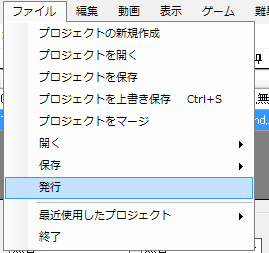

자. 여기까지하면 완성입니다. 패턴을 배포하기 위해서 데이터를 만들어 봅니다.
파일→발행을 선택합니다.

발행 창이 뜹니다. 배포하고 싶은 난이도를 선택합니다.
발행할 폴더는 기본값도 괜찮습니다.
발행할 폴더명에는 노래제목(프로젝트 이름이 들어가므로 기본값으로 둬도 됩니다)을 넣습니다.

OK를 누르면 발행과 동시에 발행이 된 폴더가 표시됩니다. 발행된 패턴에 동영상은 포함되지 않습니다.
패턴을 올리기 전에 실제로 PPD 게임의 songs 폴더에 넣어 미리 보기 또는 정보 등의 표시를 확인해 보는것이 좋습니다.
그 다음 아무런 문제가 없으면 폴더를 zip 또는 rar 로 압축한 뒤 일본 공식 홈페이지나 보카로넷 홈페이지에 올립시다.